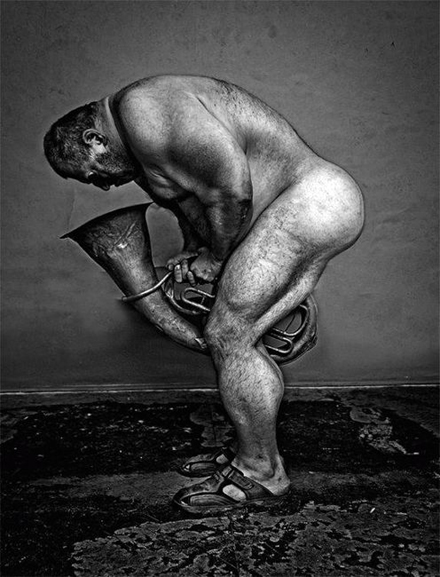
Τον άντρα που θέλουμε να τον παντρευτούμε καλό είναι να τον παίρνουμε δεύτερο χέρι. Οι καμένοι άντρες είναι οι καλύτεροι σύζυγοι.
Σιμόν Μπισερόν
| |
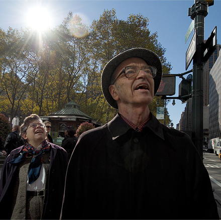
Πώς σε μερικά πράγματα έχουν εγχαραχθεί κινήσεις, άρα και τρόποι συμπεριφοράς! Οι παντόφλες, έχουν υπολογισθεί έτσι, ώστε να γλιστράει κανείς με τα πόδια του μέσα χωρίς τη βοήθεια του χεριού. Είναι μνημεία αντίστασης του μίσους για τις υποκλίσεις.
THEODOR ADORNO
[download mp3: dengue_fever] | |
Το νερό όμοιο με δέρμα,
Που κανείς δεν μπορεί να πληγώσει.
Paul Eluard
[download mp3: tom_waits] | |
Τα χειμωνιάτικα βράδια είναι ατέλειωτα και πληκτικά, το χειμώνα κάθε διασκέδαση είναι καλόδεχτη, στο κάτω – κάτω δεν μπορείς να κοιμάσαι όλη την ώρα, κι ωστόσο τι να κάνει ένας φουκαράς σκαντζόχοιρος, τι μπορεί να κάνει μια σκαντζοχοιροοικογένεια το χειμώνα, κάθονται εκεί πέρα και κοιτάνε το ταβάνι, έχουν εξαντλήσει όλα τα θέματα συζητήσεως, δεν μπορούν να σκεφτούνε τίποτ’ άλλο, ο χειμώνας είναι απίστευτα μακρύς, σού ‘ρχεται τρέλα, κι ούτε γίνεται να παίρνεις όλη την ώρα υπνωτικά χάπια˙ κι έτσι οι σκαντζόχοιροι αποφασίζουν να αγοράσουν ένα γραμμόφωνο κι ένα δίσκο με καλοκαιριάτικους ήχους και θορύβους, κρωξίματα βατράχων ας πούμε, ή κάτι παρόμοιο τέλος πάντων, αρχίζουνε λοιπόν να κάνουνε οικονομίες, μαζεύουνε δεκαρίτσα – δεκαρίτσα όλη την άνοιξη κι όλο το καλοκαίρι κι όλο το φθινόπωρο κι ύστερα πάνε και αγοράζουν ένα μεταχειρισμένο γραμμόφωνο κι ένα δίσκο με καλοκαιριάτικους θορύβους, κρωξίματα βατράχων ας πούμε, αλίμονό τους όμως, μόλις πάνε να τον παίξουν ανακαλύπτουν πως δεν τους έχουν απομείνει λεφτά για να αγοράσουν βελόνες, σωστή συμφορά δηλαδή, γιατί τι να το κάνεις το γραμμόφωνο και το δίσκο χωρίς βελόνες, οι σκαντζόχοιροι είναι απαρηγόρητοι, παίρνουν το δρόμο για το σπίτι απελπισμένοι, άχ ! λένε, τώρα έχουμε γραμμόφωνο μα πρέπει να κάνουμε οικονομίες άλλον ένα χρόνο για να αγοράσουμε βελόνες, κι όταν φτάνουν σπίτι ο ποιο μικρός σκαντζόχοιρος αρχίζει να χοροπηδάει από χαρά, οι άλλοι νομίζουν ότι του έστριψε, αλλά ο μικρός σκαντζόχοιρος φωνάζει : τι ανάγκη έχουμε από βελόνες, σκαντζόχοιροι δεν είμαστε ; έχουμε βελόνες που φτάνουν για πενήντα χρόνια, κι οι σκαντζόχοιροι αλληλοκοιτάζονται και σκάνε στα γέλια και το γραμμόφωνο παίζει, παίζει, παίζει όλο το χειμώνα ως την άνοιξη.
Από το βιβλίο «Ζωολογία» του Μίλος Ματσόουρεκ
Ακούστε το εκπληκτικό "Véu da Noite" απο τη Ceu
[download mp3: ceu] | |
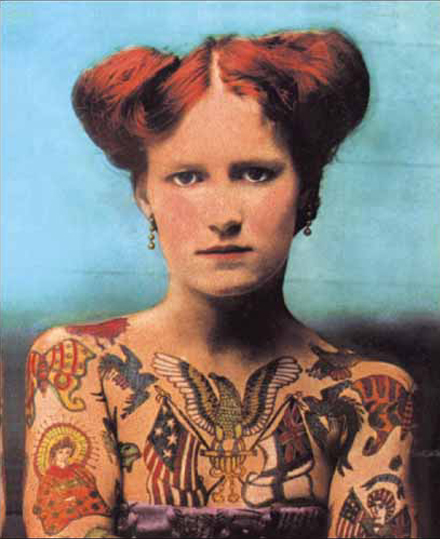
Έχει πολύ ενδιαφέρον το τι ήταν κάποιοι στη προηγούμενη ζωή τους. Ο φίλος μου, για παράδειγμα, παλιότερα ήταν φοβερά ευχάριστος.
Άνκε Ένγκελε
| |
Η εντιμότητα είναι η μεγάλη πλανεύτρα όλων των φανατικών. Αυτό που ο Λούθηρος νόμισε πως τον πλησίασε με τη μορφή του διαβόλου ή μιας όμορφης γυναίκας και που το απόδιωξε με εκείνον τον απελέκητο τρόπο του ήταν η εντιμότητα και ίσως – σε σπανιότερες περιπτώσεις – ακόμα και η αλήθεια.
Νίτσε
| |
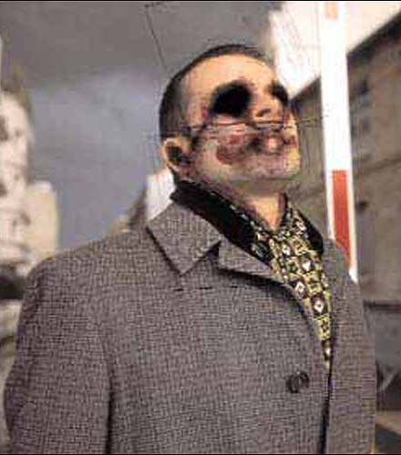
Οι μόνοι φυσιολογικοί άνθρωποι είναι εκείνοι που δεν ξέρεις καλά.
Joe Ancis
| |
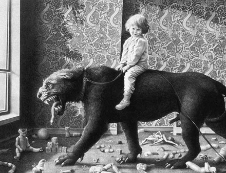
Κάθε φορά που συναντάω το παιδί μέσα μου, του δίνω μία ξεγυρισμένη σφαλιάρα.
Α. Μπέρζες
| |
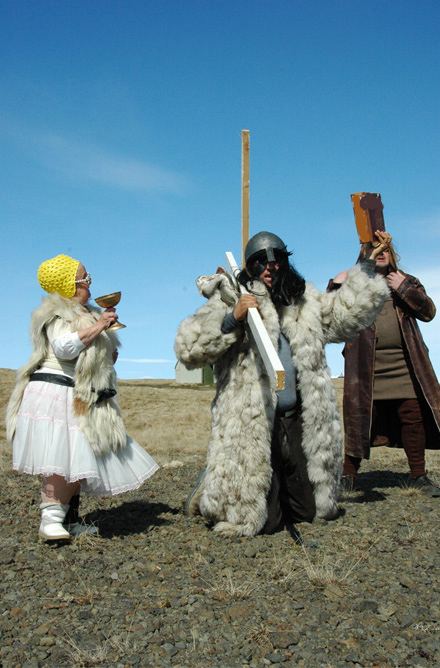
Να σας πω τι έχουμε εμείς οι Ισραηλινοί εναντίον του Μωυσή ; Μας τριγύρισε σαράντα χρόνια στην έρημο για να μας πάει στο μοναδικό μέρος της Μέσης Ανατολής που δεν έχει πετρέλαιο.
Γκόλντα Μέγιρ
| |
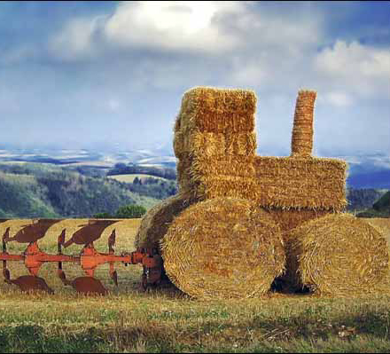
Αλλιώς μυρίζει το σανό στα άλογα και αλλιώς στους ερωτευμένους.
Lec Stanislaw Jerzy
| |
Τον ταξιδιώτη δεν πρέπει να τον σταματάς, ειδικά όταν επιτέλους αναχωρεί.
Κάρεν Μπλίξεν
| |
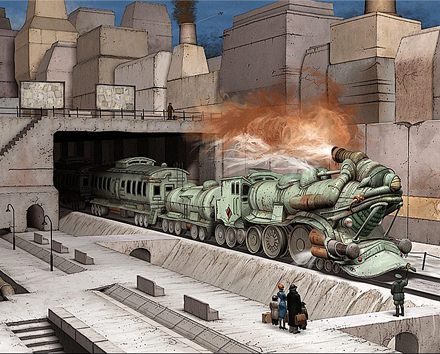
- Κατασκευασμένο σύμφωνα με τις Βρετανικές προδιαγραφές.
- Το ίδιο ήταν και ο Τιτανικός.
| |
Το rock ήτανε πάντα δίπλα στήν εργατιά. | |
Η ευθύνη γεννιέται όταν δεν λέμε έγκαιρα όχι.
Λέον Τρότσκι
| |
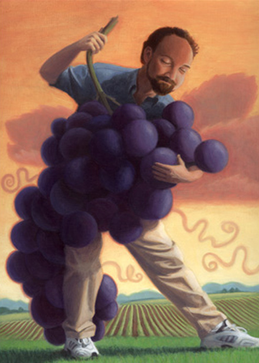
Στην οικογενειακή συνάντηση, δεν φταίνε μόνο αυτοί που τη διοργανώνουν, αλλά και αυτοί που δεν την εμποδίζουν.
Κ. Κράους
| |
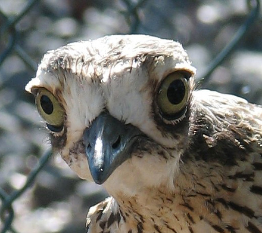
Δέσε αντάμα δύο πουλιά.
Δεν θα μπορέσουν να πετάξουν παρόλο που τώρα έχουνε
τέσσερα φτερά.
Μαλβανά Τζαλαλουντίν Ρουμί
| |
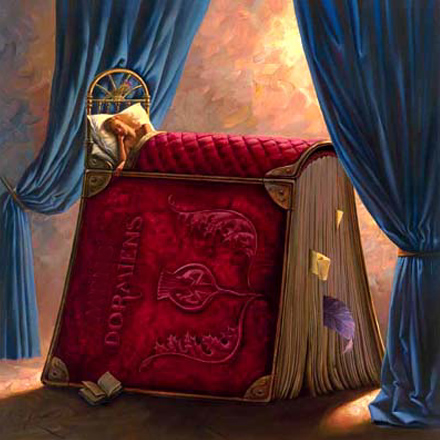
Είναι ένα βιβλίο για να σκοτώσει τον χρόνο όλων εκείνων που τον προτιμάνε νεκρό.
Dame Rose Macault
| |
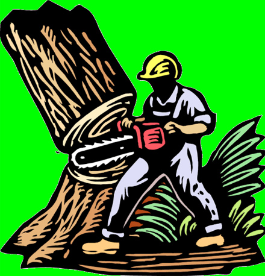
Οι μελλοντικοί Δαρβίνοι θα διατυπώσουν ίσως τη θέση ότι τα πιο ανεπτυγμένα όντα (στα οποία συγκαταλέγονται αυτοί) κατάγονται από τούς ανθρώπους. Αυτό θα είναι σοκ !
Lec Stanislaw Jerzy
| |
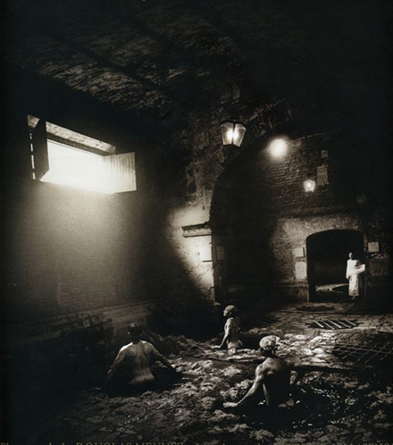
Κανένας δεν μπορεί να πληγεί τόσο βαθειά αν δεν διαθέτει μεγάλο βάθος. Σε όποιον συμβαίνει κάτι τέτοιο τείνει από το άλλο μέρος προς τα ύψη. Δηλαδή σε αυτό το βάθος αντιστοιχεί ένα δυνητικό ύψος και στο σκοτάδι της νύχτας κρυφό φώς.
Κάρλ Γιούνγκ
| |
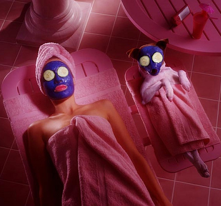
Πρέπει να πάρουμε τα πράγματα περισσότερο στ΄αστεία από ότι τους αξίζει, ιδίως μάλιστα αφού τόσον καιρό τα είχαμε πάρει περισσότερο στα σοβαρά από ότι τους αξίζει.
Νίτσε
| |
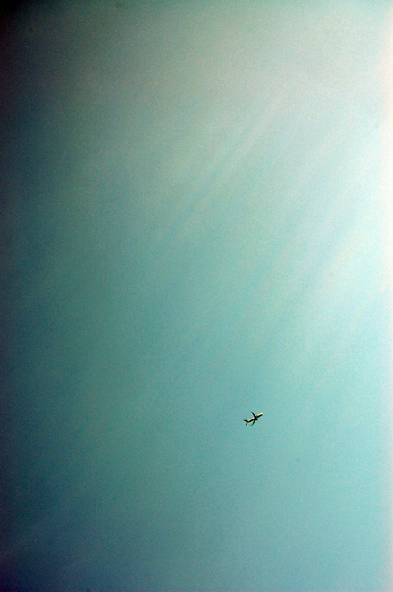
Το σημαντικότερο στη ζωή είναι, να ξέρεις πάντα πού είναι η πίσω πόρτα.
Γουλιέλμος Β΄
| |
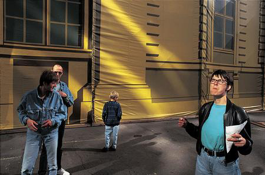
Ο μυθιστορηματικός κόσμος είναι η διόρθωση αυτού εδώ του κόσμου, σύμφωνη με τη βαθειά επιθυμία του ανθρώπου.
Οι ήρωες των μυθιστορημάτων μιλούν τη γλώσσα μας, έχουν τις αδυναμίες και τη δύναμή μας. Μόνο που αυτοί φτάνουν στα άκρα τη μοίρα τους, και δεν υπάρχουν ποιο ανατρεπτικοί ήρωες από εκείνους που οδηγούνται στα πάθη τους ˙ αυτοί οδηγούν στο πέρας του εκείνο πού εμείς δεν φτάνουμε ποτέ.
Άλμπερ Καμύ
| |
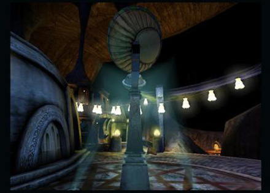
Μία ράθυμη ταπεινοσύνη τρυπώνει στο δωμάτιο
Που κατοικεί μέσα μου στη χούφτα της ηρεμίας
Tristan Tzara
| |
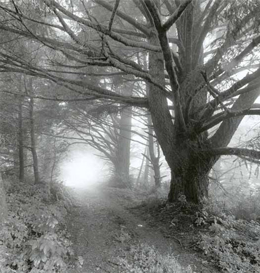
Τελευταία αγαπώ μόνο την ησυχία
οι έγνοιες της ζωής δεν αγγίζουν την καρδιά
ενδοσκοπώ χωρίς μακροχρόνια σχέδια
γνώση του κενού, επιστροφή στο αρχαίο δάσος
άνεμος έρχεται από τα πεύκα
ρωτάς γιατί η ζωή είναι έτσι
το τραγούδι του ψαρά μπαίνει βαθιά στον κόλπο.
Wang Wei
| |
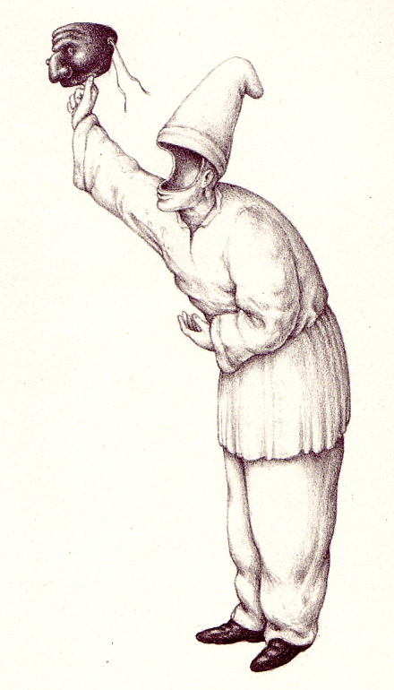
Ότι ισχύει για την ορμική ζωή, ισχύει εξ ίσου και για την πνευματική, ο ζωγράφος ή ο συνθέτης που απαγορεύει στον εαυτό του ένα συνδυασμό χρωμάτων ή τη σύνθεση μιας συγχορδίας ως κιτς, ο συγγραφέας τον οποίο εκνευρίζουν ορισμένοι γλωσσικοί σχηματισμοί ως τετριμμένοι ή σχολαστικοί, αντιδρούν με τόση σφοδρότητα εναντίον τους, γιατί μέσα στους ίδιους υπάρχουν στιβάδες που τους ελκύουν προς τα εκεί.
Η αποκήρυξη των κυρίαρχων πολιτιστικών τερατομορφιών προϋποθέτει ότι έχει αντλήσει δυνάμεις από αυτή τη συμμετοχή για τη καταγγείλει.
Οι δυνάμεις που καταγγέλλουν, είναι η διανοητική συνείδηση που έχει ένα κοινωνικό στοιχείο όπως ακριβώς το ηθικό υπερεγώ. Μόλις όμως αυτή η παράσταση χάσει την ενάργεια της, η διανοητική ροπή προς τα κάτω χάνει τις αναστολές της και έρχονται στο φως η χοντροκοπιά και η φορτικά αδέξια οικειότητα. Αυτό εκλογικεύεται ως η θέληση να γίνει κανείς κατανοητός από τους άλλους.
Οι πτωχευμένοι στο πνεύμα πορεύονται ενθουσιασμένοι στη κόλαση που είναι ο παράδεισος τους.
THEODOR ADORNO
| |
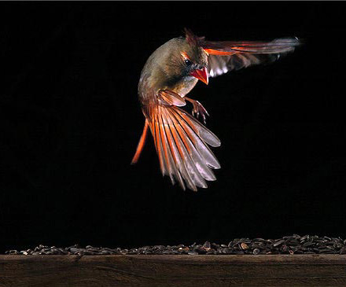
Να είσαι ελαφρύς σαν το πουλί, όχι σαν το φτερό.
Βαλερύ
| |
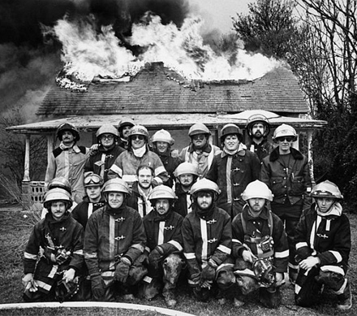
Η ζωή είναι σαν την πυρκαγιά. Φλόγες που ο περαστικός ξεχνάει, στάχτες που ο άνεμος σκορπίζει, ένας άνθρωπος έζησε.
Ομάρ Καγιάμ
| |
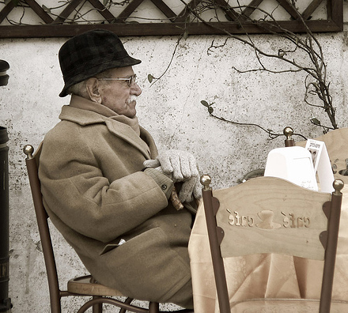
Οι ιδανικές διαστάσεις του άντρα είναι 80 – 20 – 42.
Δηλαδή, 80 χρονών, 20 εκατομμύρια στην τράπεζα, 42 πυρετό.
Ανώνυμη
| |
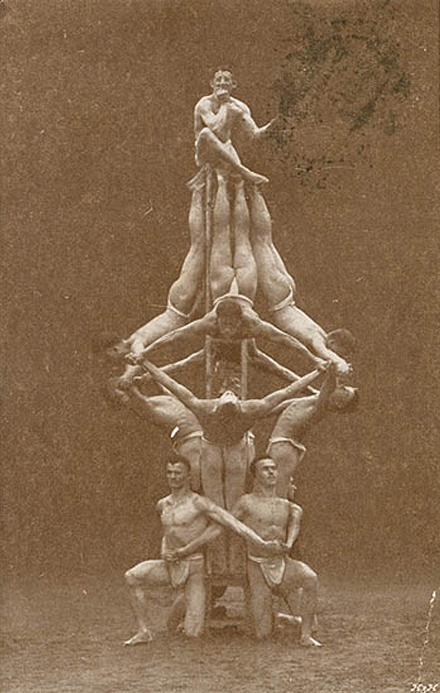
Τίποτα στον κόσμο δεν είναι πιο δίκαια μοιρασμένο από το μυαλό. Όλοι πιστεύουν ότι έχουν πολύ.
Πάμπλο Πικάσο
| |
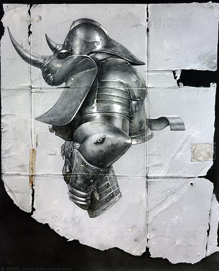
Κάθε φορά που ζωγραφίζω ένα πορτρέτο χάνω και έναν φίλο.
John Sargent
| |
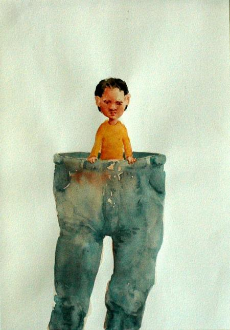
Τα παιδιά μεγαλώνουν πιο γρήγορα, όταν τους τραβάς τα αφτιά.
Ζιμπάμπουε
| |
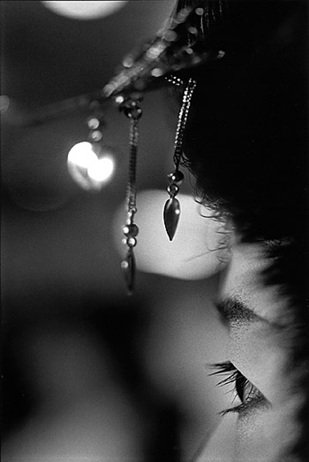
Εσύ σώσε την ψυχή σου, για το κορμί σου θα φροντίσω εγώ.
Ράκελ Γουέλτς
| |
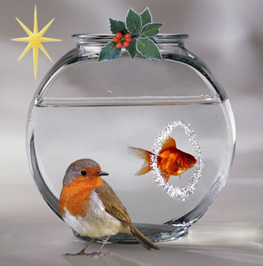
-Είναι κρίμα που στον παράδεισο μπορούμε να πάμε μόνο με νεκροφόρα.
Lec Stanislaw Jerzy
| |
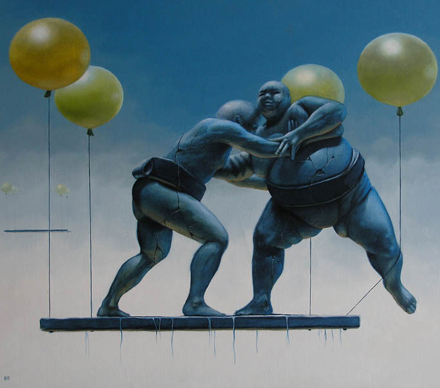
Τα αντίθετα συγκλίνουν και από τις αντιθέσεις έχουμε πανώρια συμφωνία.
Ηράκλειτος
| |
Το άλογό μου καλπάζει στα χωράφια
Είμαι και εγώ μέσα στην εικόνα!
Ακούτε;
Matsuo Basho (1600 μ.χ.)
| |

Υπάρχουν μερικοί που λένε
πως το έχουν δεί.
Ποιο είναι αυτό ;
Ο κύκλος του ήλιου;
Ο δρόμος των άστρων;
Ο κύριος των σπηλαίων ζει στην πόλη
του φεγγαρίσιου βουνού.
Άλμα Πραχμού (Ινδία)
| |
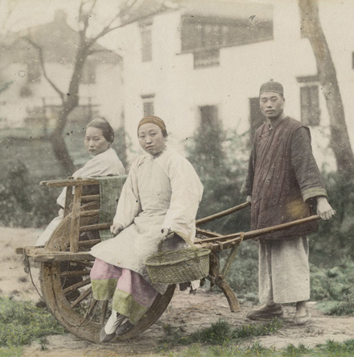
Ακόμα και εάν έχεις 10000 χωράφια δεν τρως παρά ένα πιάτο κάθε ημέρα.
Ακόμα και αν το σπίτι σου έχει χίλια δωμάτια, χρησιμοποιείς λιγότερο από 2 μέτρα κάθε βράδυ.
Κινέζικη σοφία
| |
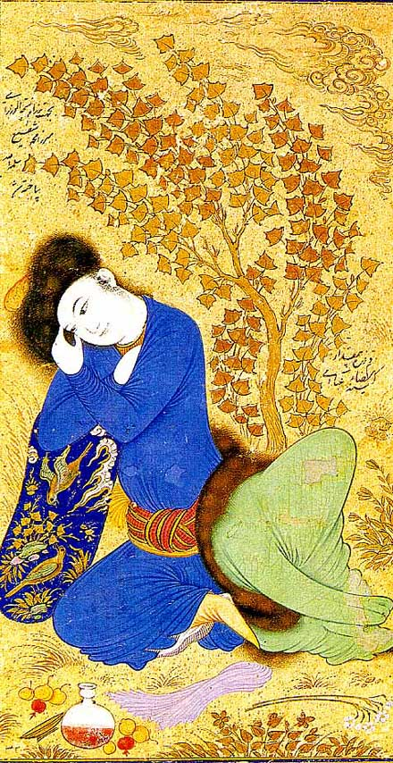
Κάποτε ο Ναστραδίν Χότζας πήρε το γάιδαρο του και πήγε στο παζάρι. Πλησίασε ένα μεσίτη και του λέει :
- Πούλα τον.
Μα ο γάιδαρος άλλον αγοραστή δάγκωνε και άλλον κλωτσούσε. Απελπισμένος τότε ο μεσίτης γυρίζει στον Ναστραδίν :
- Άνθρωπέ μου, άντε στο καλό. Όπως πάει ο γάιδαρος σου στο τέλος θα σκοτώσει και μένα !
Και ο Χότζας, μ’ ένα χαμόγελο, απάντησε :
- Δεν ήθελα να τον πουλήσω ! Έτσι τον έφερα για να δει ο κόσμος τι τραβάω από δαύτονε !
| |
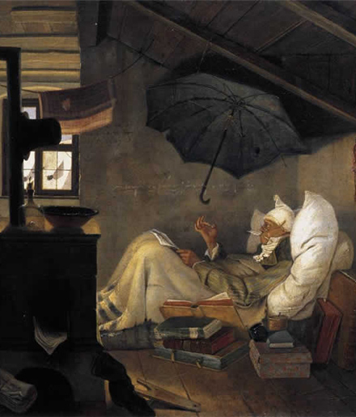
Όποιος αρρωσταίνει, το πρώτο που μαθαίνει είναι ότι φταίει ο ίδιος.
Ο. Ντρέβερμαν
| |
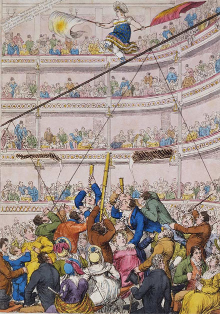
Είδα το έργο κάτω από άσχημες συνθήκες, η αυλαία ήταν ανεβασμένη.
G.S.Kaufman
| |
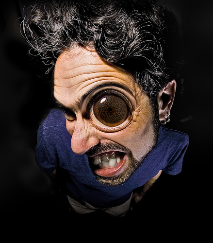
Τίποτα δεν ζεσταίνει την καρδιά περισσότερο, από το να δέρνει η κακοτυχία τους καλούς φίλους.
Ίμπν Σαούντ
| |
|
35 readers online
|